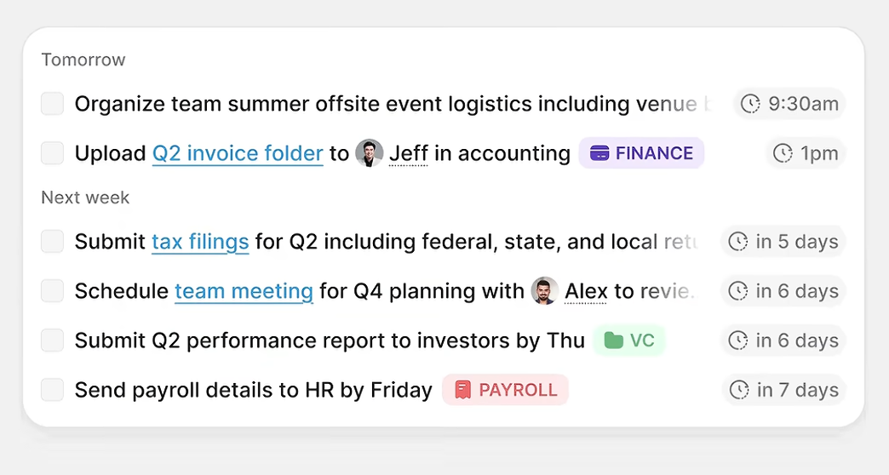
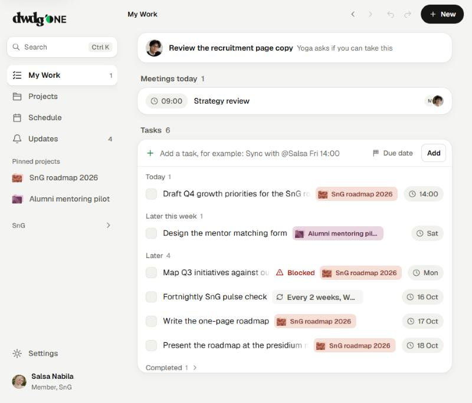
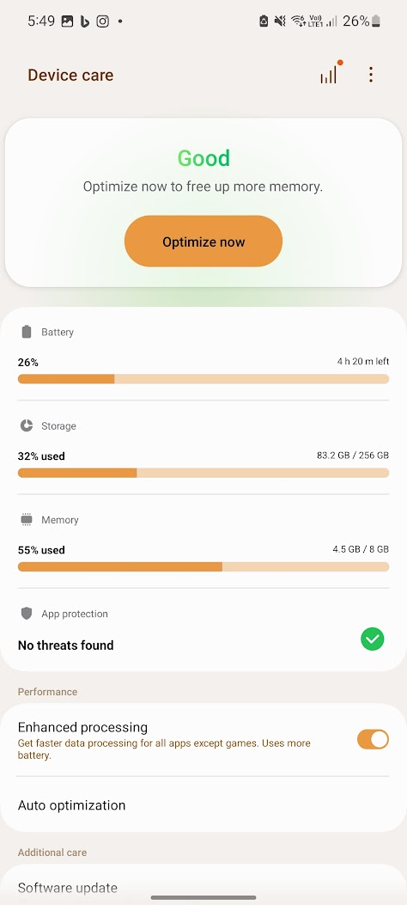
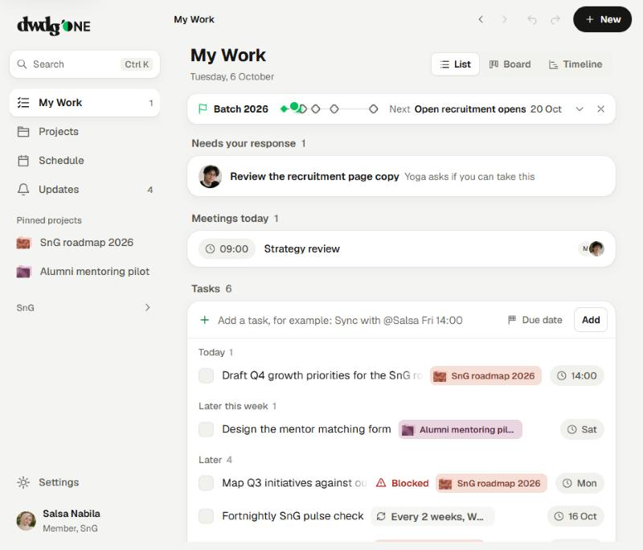
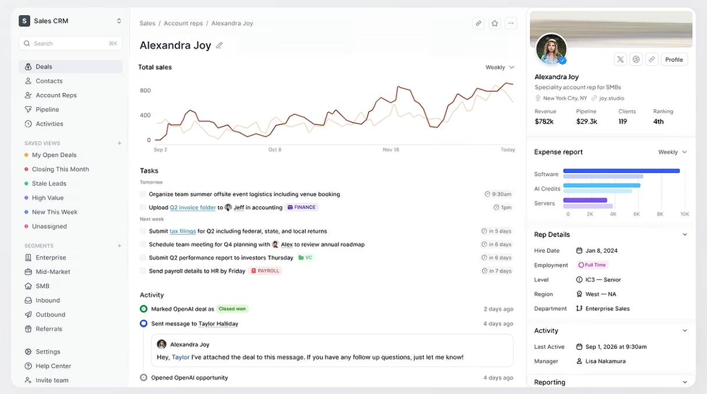
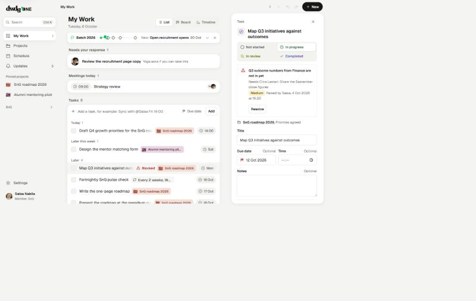
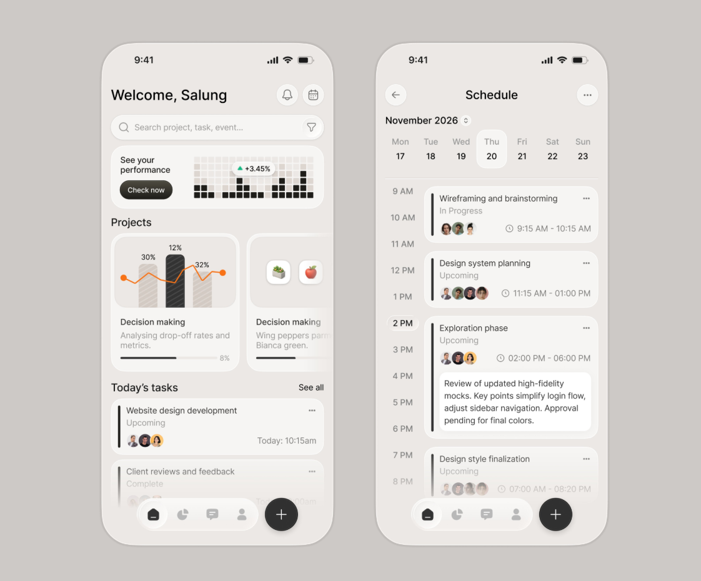
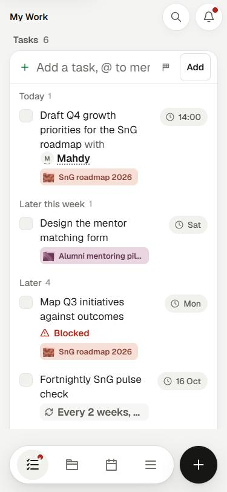
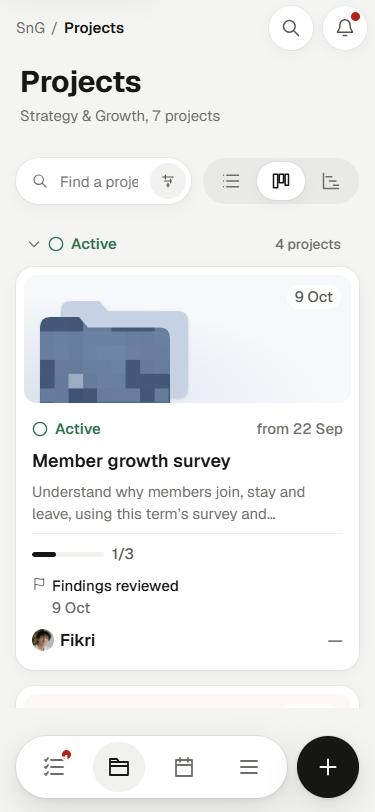
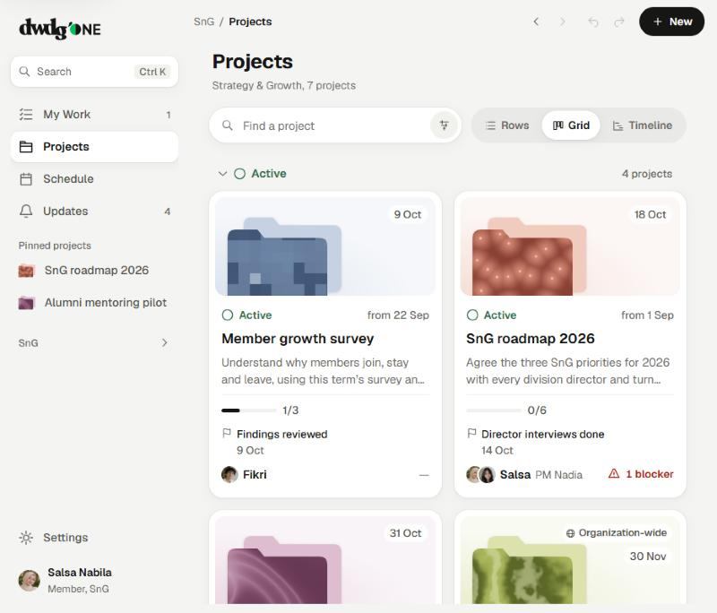

Left is your reference, right is dwdg'ONE in the Comfortable look as it runs now. Only My Work, Projects, the navigation and the task panel are rebuilt so far. The other pages wait for your verdict.
One white card, small grey captions for the time groups, one line per task: quiet checkbox, the title as a sentence with people inline, one coloured chip (your project's own colours), and a time pill on the right. Long titles fade out.


A label on the grey background, then one white group. Used for "Needs your response" and "Meetings today", which sit above the tasks on narrow screens and beside them on wide ones.


A short sidebar on the canvas: search, the four main pages, pinned projects where R012 has saved views, and the division tools folded under the division name. The task panel docks on the right like R012's profile panel, with collapsible sections.


Floating pill tab bar with a separate round black +, the title with quiet round icon buttons, and project cards with the art inset and a slim progress line.



